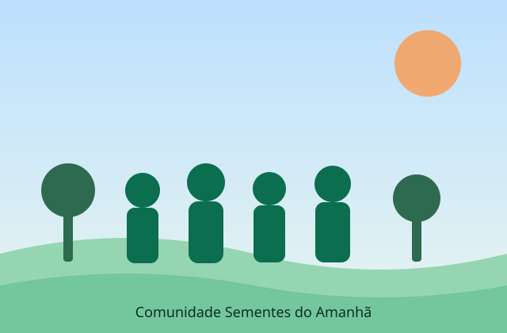

Missão
Ampliar o acesso a educação, alimentação digna e trabalho para famílias em situação de vulnerabilidade social.
Terceiro setor • Desde 2009
Somos uma organização sem fins lucrativos que atua em comunidades vulneráveis com projetos de educação, segurança alimentar e geração de renda. Todo recurso é aplicado com transparência — e todo voluntário é parte da mudança.

Uma rede de pessoas que acredita que mudança social se constrói com método, escuta e continuidade.
Ampliar o acesso a educação, alimentação digna e trabalho para famílias em situação de vulnerabilidade social.
Comunidades autônomas, onde cada pessoa tenha condições reais de decidir sobre o próprio futuro.
Dados consolidados do último exercício, auditados e publicados em nosso relatório de transparência.
A partir de R$ 30/mês você sustenta uma turma de reforço escolar por um semestre.
Quero doarDoe horas de conhecimento: aulas, mentoria, apoio administrativo ou comunicação.
Quero ser voluntárioEmpresas podem apoiar projetos específicos com recursos, materiais ou equipe.
Falar com a equipe